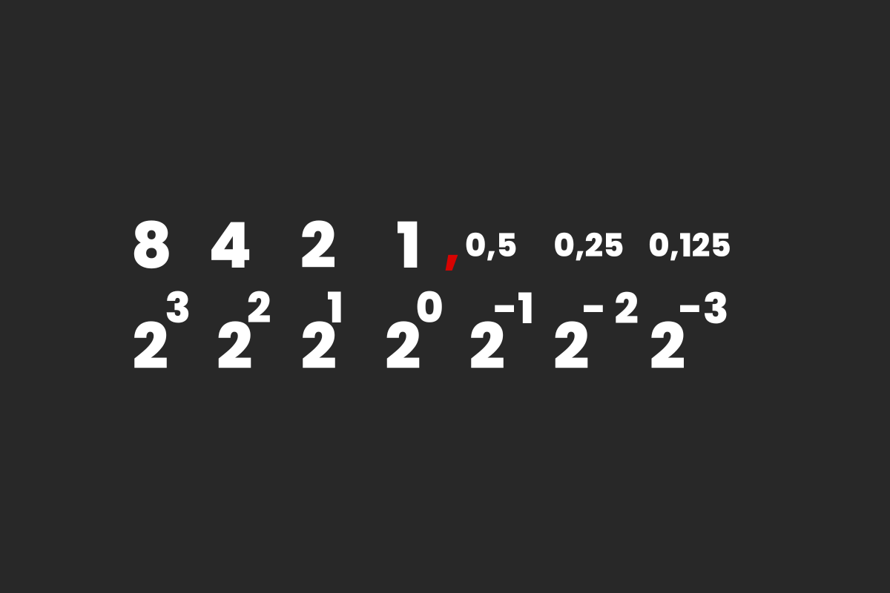
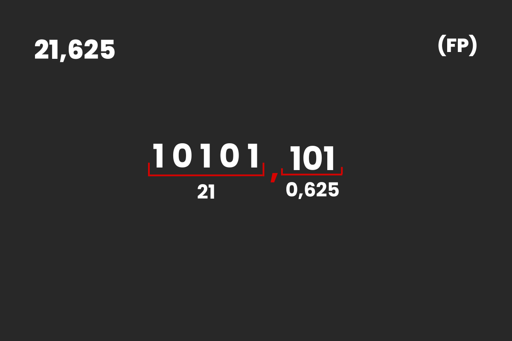
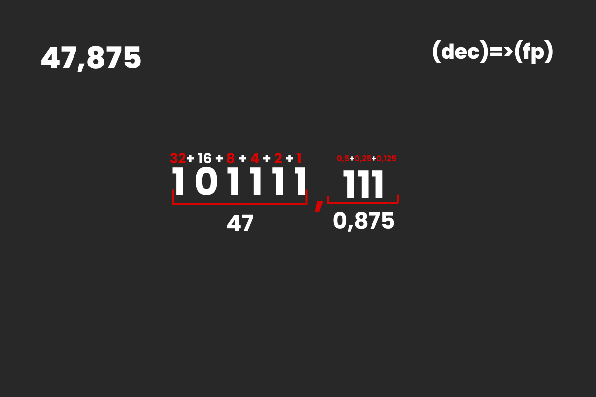
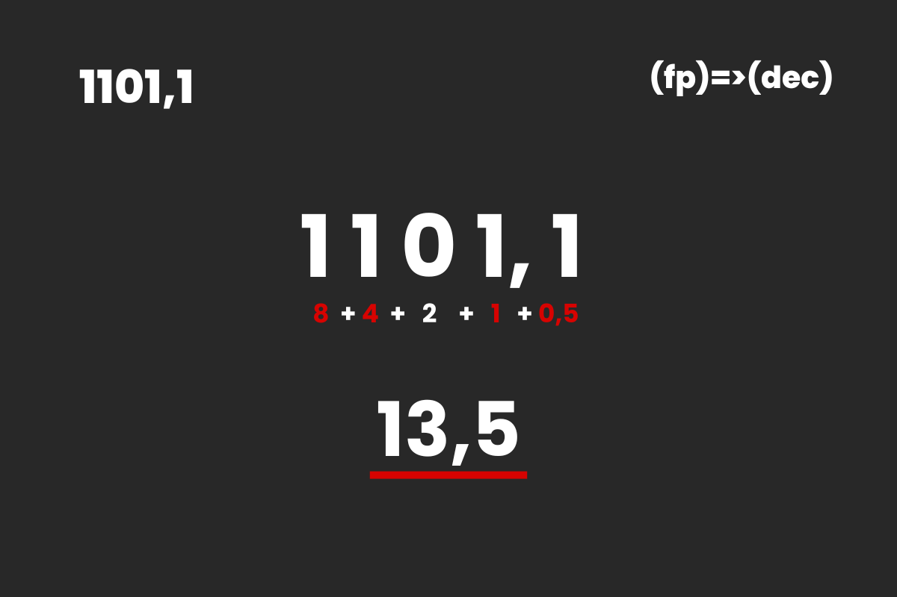

Zapis FP (Zmienno-przecinkowy) - umożliwia obliczanie liczb zmienno-przecinkowych w systemie binarnym. Sposób obliczania części całkowitej omawialiśmy tutaj Natomiast cześć po przecinku oblicza się niemal tak samo, tylko wagi liczymy od lewej; wykładniki wag liczymy w dół zaczynając od -1;
Wagi w zapisie FP
Zapis FP liczby 21.625
Obliczamy wartość przed przecinkiem (21) oraz po przecinku (0,625) i wychodzi wynik 10101,101
Przykład
Zapisz liczbę 47,875(10) w systemie FP
Dobieramy takie wagi, żeby ich suma przed przecinkiem wyniosła 47, a po przecinku 0,875, dzięki czemu dostaniemy wynik 101111,111(fp)
Przykład
Zapisz liczbę 1101,1(fp) w systemie dziesiętnym
Obliczamy wartości wag w miejscach jedynek, a ich suma daje nam wynik 13,5(10)